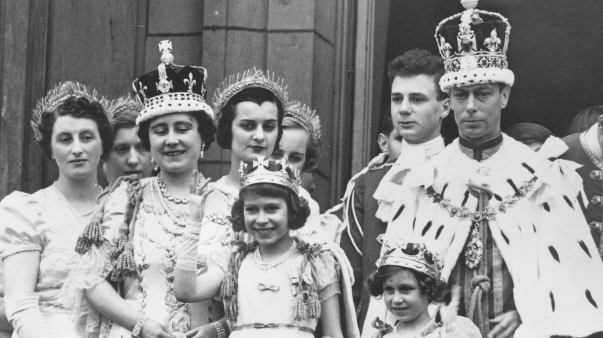
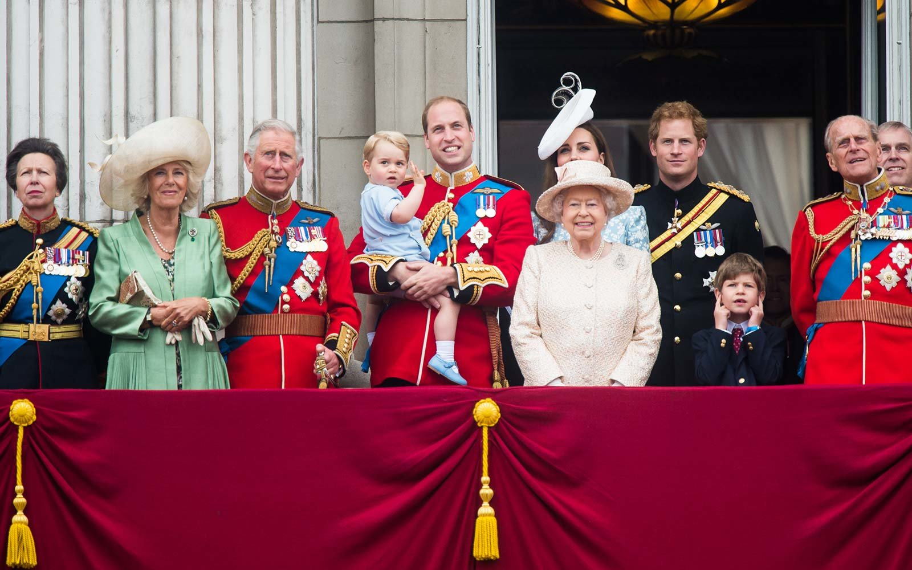

The Sovereign
Queen Elizabeth II
Elizabeth Alexandra Mary Windsor is Queen of the United Kingdom and head of the Commonwealth. She ascended the throne on February 6, 1952 after the death of her father King George VI.
How She Became Heir
Elizabeth was born on April 21, 1926 to Prince Albert, Duke of York and Elizabeth Bowes-Lyon, Duchess of York. Although she was third in line to the throne, Elizabeth was not expected to become Queen because her father was the second-born son of the reigning King George V.
But on December 11, 1936 her Uncle, King Edward VIII abdicated the throne so that he could marry the twice divorced Wallis Simpson. Edward didn't have any children, and so as next in the line of succession, Elizabeth's father Prince Albert, became King George VI. Elizabeth was suddenly heir-apparent and destined to become Queen unless her parents produced a son.
Marriage and Children
Elizabeth married Prince Philip of Greece and Denmark on November 20, 1947. He is now known as Prince Philip, Duke of Edinburgh. Together they have 4 children, 8 grandchildren, and 8 great-grandchildren.
Longest and Oldest Ever Reigning Monarch
On September 9, 2015, Elizabeth II became the longest-reigning British monarch and the longest-reigning female monarch in world history. She has now been Queen of the United Kingdom for 67 years and 217 days. At age 93 she is also the longest-lived monarch in British history.

The History
Royal Succession Laws
The basis for succession has always existed in British royal history. But it was not until the 17th and 18th centuries that modern laws of succession were established. After King James II escaped the country in 1688, Parliament determined that succession to the throne should be regulated by Parliament.
The Bill of Rights (1689) and the Act of Settlement (1701) established the new line of succession and laid down various conditions which the Sovereign must meet. Parliament has the power to remove the sovereign and to replace it.
On April 25, 2013, the Parliament of the United Kingdom passed the Succession to the Crown Act and in so doing repealed the Royal Marriages Act 1772. It went into force on March 26, 2015 and enacted the following provisions:
Gender
Males born after 28 October 2011 no longer precede their elder sisters in the line of succession. This replaced male-preference primogeniture with absolute primogeniture, which meant the eldest child, regardless of gender, would precede his or her brothers and sisters. Princess Charlotte, for example, retained her place as fourth in line after the birth of her younger brother Prince Louis.
Marriage to Roman Catholics
People are no longer disqualified from the line of succession if they marry a Roman Catholic. This had no immediately impact on those closest to the crown. The monarch, who is Supreme Govenor of the Church of England, must still be a Protestant in accordance with the Act of Settlement.
Royal Marriage Consent
The Royal Marriages Act 1772 is repealed with this new provision. Now only the first six people in line to the throne require the Sovereign's approval to marry. Marriage without the Sovereign's consent would disqualify the person and the person's descendants from the marriage from succeeding to the Crown.
